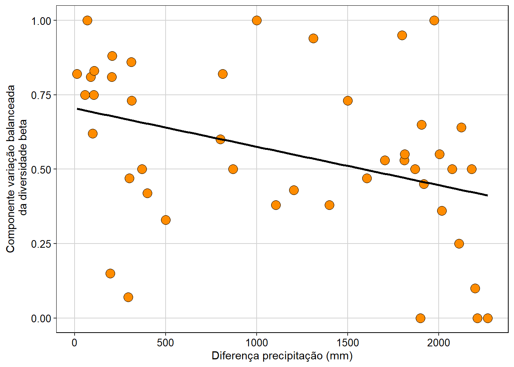
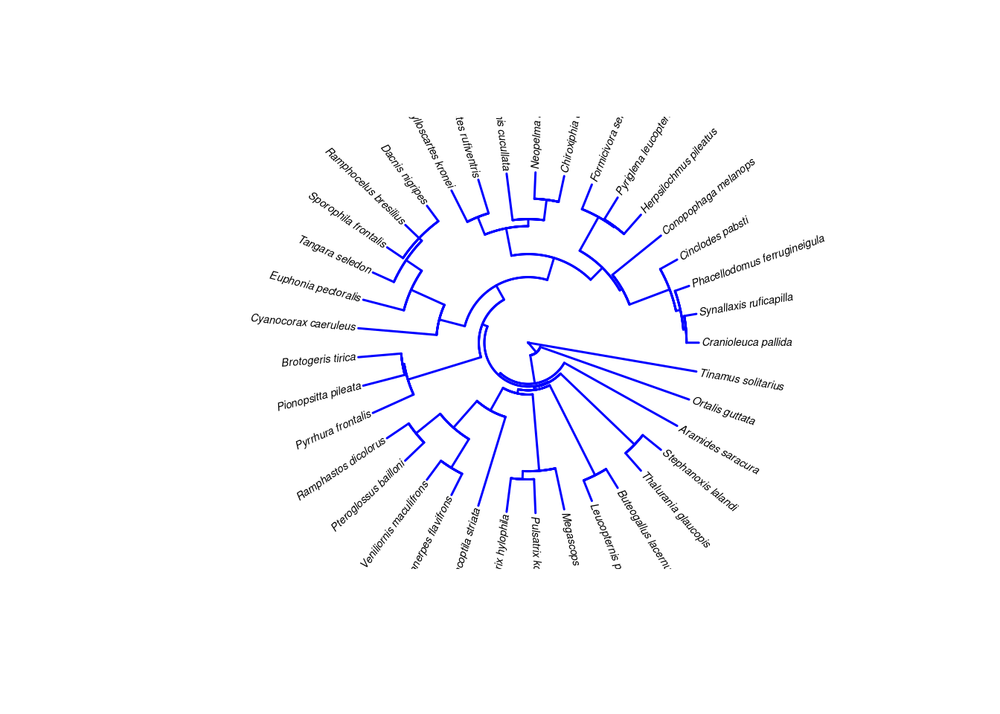

Capítulo 12 Diversidade Taxonômica
Pré-requisitos do capítulo
## Pacotes
library(devtools)
# install_github("paternogbc/ecodados") # para instalar o ecodados
library(ecodados)
library (vegan)
library(ggplot2)
library(BiodiversityR)
library(hillR)
library(betapart)
## Dados necessários
composicao_especies <- ecodados::composicao_anuros_div_taxonomica
precipitacao <- ecodados::precipitacao_div_taxonomica12.1 Aspectos teóricos
A diversidade biológica é um conceito multifacetado que pode ser definido e analisado de diferentes maneiras (e.g. diversidade genética, taxonômica, funcional, filogenética, ecossistêmica, etc.)(Magurran and McGill 2011; N. J. Gotelli and Chao 2013). Whittaker (1960, 1972) particionou a diversidade em três componentes: i) diversidade alfa que é caracterizada pela diversidade dentro do habitat ou unidade amostral; ii) diversidade beta que é caracterizada pela variação na diversidade entre habitats ou unidades amostrais; e iii) diversidade gama que é caracterizada pela combinação da diversidade alfa e beta ou definida como a diversidade regional englobando todos os habitats ou unidades amostrais. Portanto, não existe um método que quantifique todos os parâmetros associados à diversidade biológica. Consequentemente, a escolha da métrica de diversidade dependerá i) do objetivo do estudo; e ii) das informações disponíveis para o pesquisador.
Neste capítulo, iremos abordar a diversidade taxonômica que ignora a relação de parentesco entre as espécies (e.g. diversidade filogenética - @ref[cap13]) e as diferentes funções que as espécies realizam no ecossistema (e.g. diversidade funcional - @ref[cap14]). Na diversidade taxonômica, pesquisadores estão interessados na riqueza de espécies (e.g. número de espécies), na distribuição de abundância das espécies (e.g. fato que algumas espécies são comuns e outras raras) e/ou diversidade de espécies (e.g. índices que descrevem a relação entre a riqueza e a distribuição da abundância relativa das espécies) nas localidades.
12.2 Diversidade alfa
12.2.1 Riqueza de espécies ou número de espécies
Riqueza de espécies é uma métrica intuitiva e de fácil compreensão, uma vez que se refere ao número de espécies observadas em uma localidade. É importante ter em mente que a riqueza de espécies é influenciada pelo esforço amostral e sua estimativa real é um imenso desafio (Magurran and McGill 2011). Comparações entre comunidades com diferenças no número de amostragens ou abundância das espécies devem ser realizadas por meio de rarefações (veja @ref[cap10]), enquanto que o número de espécies não detectadas pode ser estimado pelos estimadores de riqueza (veja @ref[cap11]). Embora raramente usados como alternativa a rarefação, existem alguns índices que calculam a riqueza de espécies ponderando a abundância total (i.e. tamanho da amostra) dentro de cada comunidade. Esses índices são:
Índice de Margalef
\[D_{Mg} = \frac{S-1}{ln (N)}\]
onde:
S = o número de espécies na comunidade;
ln = logaritmo natural;
N = número total de indivíduos na comunidade;
DMg não tem um valor máximo e sua interpretação é comparativa, com valores maiores indicando maior riqueza de espécies.
e
Índice de Menhinick
\[D_{Mn} = \frac{S}{\sqrt{N}}\]
onde:
S = o número de espécies na comunidade;
N = número total de indivíduos na comunidade;
DMn não tem um valor máximo e sua interpretação é comparativa, com valores maiores indicando maior riqueza de espécies.
12.2.1.1 Exemplo prático 1 - Riqueza de espécies
Explicação dos dados
Neste exemplo, avaliaremos a riqueza de espécies de 10 comunidades. Os dados de ocorrência das espécies nas comunidades foram simulados para demonstrar as propriedades das métricas de diversidade taxonômicas. Utilizaremos este conjunto de dados para todos os exemplos deste capítulo.
Pergunta:
A variação espacial na riqueza de espécies nas comunidades está associada com a variação na precipitação?
Predições
Os valores de riqueza de espécies serão maiores nas comunidades localizadas em regiões que recebem grande volume de precipitação do que em regiões mais secas.
Variáveis
Variáveis resposta e preditoras
- Dataframe com as comunidades (unidade amostral) nas linhas e as espécies (variável resposta) nas colunas.
- Dataframe com as comunidades (unidade amostral) nas linhas e precipitação anual (variável preditora) na coluna.
Checklist
Verificar se os dataframes de composição de espécies e variáveis ambientais estão com as unidades amostrais nas linhas e variáveis preditores nas colunas.
Verificar se as comunidades nos dataframes de composição de espécies e variáveis ambientais estão distribuídos na mesma sequência/ordem nos dois arquivos.
Abaixo demonstramos os códigos no R para determinar a riqueza de
espécies para cada comunidade a partir da planilha de composição de
espécies. Os dados estão disponíveis no pacote ecodados.
# Ver os dados das comunidades
head(composicao_especies)
#> sp1 sp2 sp3 sp4 sp5 sp6 sp7 sp8 sp9 sp10
#> Com_1 10 10 10 10 10 10 10 10 10 10
#> Com_2 91 1 1 1 1 1 1 1 1 1
#> Com_3 1 3 6 25 1 0 0 0 0 0
#> Com_4 0 0 0 0 0 15 15 18 17 16
#> Com_5 0 9 0 6 0 11 0 2 12 0
#> Com_6 3 0 5 0 12 1 0 13 12 0Vamos ver a riqueza de espécies para cada comunidade.
# Calculando a riqueza observada de espécies para cada comunidade.
(riqueza_sp <- specnumber(composicao_especies))
#> Com_1 Com_2 Com_3 Com_4 Com_5 Com_6 Com_7 Com_8 Com_9 Com_10
#> 10 10 5 5 5 6 2 4 6 4Vamos ver a abundância total de cada comunidade.
# Calculamos a abundância total para cada comunidade.
(abundancia <- apply(composicao_especies, 1, sum))
#> Com_1 Com_2 Com_3 Com_4 Com_5 Com_6 Com_7 Com_8 Com_9 Com_10
#> 100 100 36 81 40 46 4 20 15 11Calculando o Índice de Margalef.
# A função round é para limitar o resultado para duas casas decimais.
(Margalef <- round((riqueza_sp-1)/log(abundancia), 2))
#> Com_1 Com_2 Com_3 Com_4 Com_5 Com_6 Com_7 Com_8 Com_9 Com_10
#> 1.95 1.95 1.12 0.91 1.08 1.31 0.72 1.00 1.85 1.25Calculando o Índice de Menhinick.
(Menhinick <- round(riqueza_sp/sqrt(abundancia), 2))
#> Com_1 Com_2 Com_3 Com_4 Com_5 Com_6 Com_7 Com_8 Com_9 Com_10
#> 1.00 1.00 0.83 0.56 0.79 0.88 1.00 0.89 1.55 1.21Agora vamos analisar a relação entre a riqueza de espécies e a precipitação anual.
# Juntando todos os dados em um único dataframe.
dados <- data.frame(precipitacao$prec, riqueza_sp, Margalef, Menhinick)
# Renomenado as colunas
colnames(dados) <- c("Precipitacao", "Riqueza", "Margalef", "Menhinick")
# Riqueza de espécies e precipitação
anova(lm(dados$Riqueza ~ dados$Precipitacao))
#> Analysis of Variance Table
#>
#> Response: dados$Riqueza
#> Df Sum Sq Mean Sq F value Pr(>F)
#> dados$Precipitacao 1 30.622 30.6224 8.9156 0.01744 *
#> Residuals 8 27.478 3.4347
#> ---
#> Signif. codes: 0 '***' 0.001 '**' 0.01 '*' 0.05 '.' 0.1 ' ' 1Há uma relação positiva entre a riqueza de espécies e a precipitação anual (F1,8 = 8,91, P = 0,01).
Relação entre o Índice de Margalef e a precipitação anual.
anova(lm(dados$Margalef ~ dados$Precipitacao))
#> Analysis of Variance Table
#>
#> Response: dados$Margalef
#> Df Sum Sq Mean Sq F value Pr(>F)
#> dados$Precipitacao 1 0.37865 0.37865 2.1201 0.1835
#> Residuals 8 1.42879 0.17860Não há uma relação positiva entre o índice de Margalef e a precipitação anual (F1,8 = 2,12, P = 0,18).
Agora vamos analisar a relação entre a riqueza de espécies e a precipitação anual.
anova(lm(dados$Menhinick ~ dados$Precipitacao))
#> Analysis of Variance Table
#>
#> Response: dados$Menhinick
#> Df Sum Sq Mean Sq F value Pr(>F)
#> dados$Precipitacao 1 0.07626 0.076262 1.0992 0.3251
#> Residuals 8 0.55503 0.069378Não há uma relação positiva entre o índice de Menhinick e a precipitação anual (F1,8 = 1,09, P = 0,32).
Vamos plotar o gráfico com os resultados da riqueza de espécies ao longo do gradiente de precipitação anual.
ggplot(data = dados, aes(x= Precipitacao, y= Riqueza)) +
labs(x = "Precipitação anual (mm)", y = "Riqueza de espécies") +
geom_point(size = 4, shape = 21, fill = "darkorange", alpha = 0.7) +
tema_livro() +
geom_smooth(method = lm, se = FALSE, color = "black") 
Interpretação dos resultados
Percebam que ponderar a riqueza de espécies pela abundância altera a interpretação dos resultados. O número de espécies é maior em comunidades com maior precipitação. Contudo, quando poderamos pela abundância (índices de Margalef ou Menhinick), a relação com a precipitação não é significativa.
12.3 Diversidade de espécies
Diferente dos índices de riqueza de espécies que não levam em consideração a abundância relativa das espécies (i.e. todas as espécies tem o mesmo peso), os índices de diversidade avaliam além da riqueza, a dominância ou raridade das espécies nas comunidades. Assim, quando comparamos duas comunidades com a mesma riqueza de espécies, e uma das comunidades é dominada por uma única espécie e a outra comunidade apresenta espécies com abundâncias parecidas, consideramos a segunda comunidade mais diversa. Os índices de diversidade variam porque eles dão pesos diferentes para a riqueza e equitabilidade das espécies. Assim, um determinado índice de diversidade pode indicar que uma comunidade X é mais diversa que Y, enquanto outro índice indica o oposto (Melo 2008). Portanto, uma maneira de determinar qual índice de diversidade usar é saber se você quer dar maior peso para riqueza ou equitabilidade das espécies nas comunidades.
📝 Importante: Ressaltamos que há várias críticas em relação ao uso dos índices de diversidade que são abstratos e difíceis de se interpretar (Hurlbert 1971). Por exemplo, dizer que o valor X estimado por índices de diversidade é alto ou baixo é irrelevante se não tivermos uma base comparativa (para mais detalhes veja Melo 2008).
Os dois índices de diversidade mais usados na ecologia são:
Índice de Shannon-Wiener - quantifica a incerteza associada em predizer a identidade de uma espécie dado o número de espécies e a distribuição de abundância para cada espécie. Este índice é mais sensível a mudanças nas espécies raras da comunidade.
\[H' = -\sum_{i=1}^{S}p_i * ln p_i\]
onde:
pi = abundância relativa de cada espécie, calculada pela proporção dos indivíduos de uma espécie pelo número total dos indivíduos na comunidade;
ln = logaritmo natural, mas outras bases logarítmas podem ser utilizadas;
H’ não tem um valor máximo e sua interpretação é comparativa, com valores maiores indicando maior diversidade.
e
Índice de Simpson - quantifica a probabilidade de dois indivíduos retirados ao acaso da comunidade pertencerem a mesma espécie. Este índice é na verdade uma medida de dominância. Assim, como a probabilidade dos indivíduos serem da mesma espécie diminui com o aumento da riqueza de espécies, o índice de Simpson também diminui com a riqueza.
\[D = \sum_{i=1}^{S}p_i^2\]
onde:
Pi = abundância relativa de cada espécie, calculada pela proporção dos indivíduos de uma espécie pelo número total dos indivíduos na comunidade.
D varia de 0 a 1 com valores próximos de 1 indicando menor diversidade enquanto valores próximos de 0 indicam maior diversidade. Para evitar confusão nas interpretações, normalmente o índice de Simpson é expressado como o valor inverso (1 - D) para que os maiores valores representem maior diversidade. Neste caso, o valor inverso é conhecido na literatura como índice Gini-Simpson. Para o índice Gini-Simpson estamos avaliando a probabilidade de dois indivíduos retirados ao acaso da comunidade sejam de espécies diferentes.
12.3.0.1 Exemplo prático 2 - Diversidade de espécies
Explicação dos dados
Usaremos os mesmos dados simulados do exemplo prático 1.
Pergunta:
A variação espacial na diversidade de espécies das comunidades está associado com o gradiente de precipitação?
Predições
Os valores de diversidade de espécies serão maiores nas comunidades localizadas em regiões maior volume de precipitação do que em regiões mais secas.
Abaixo demonstramos os comandos no R para determinar a diversidade de espécies para cada comunidade a partir da planilha de composição de espécies.
# MARGIN = 1 significa que a função irá calcular o índice considerando
# as linhas do data.frame (comunidades).
shannon_res <- diversity(composicao_especies,
index = "shannon", MARGIN = 1)
shannon_res
#> Com_1 Com_2 Com_3 Com_4 Com_5 Com_6 Com_7 Com_8 Com_9 Com_10
#> 2.3025851 0.5002880 0.9580109 1.6068659 1.4861894 1.5607038 0.6931472 1.1058899 1.7140875 1.2636544O argumento index = "simpson", calcula o índice Gini-Simpson (1-D).
simpson_res <- diversity(composicao_especies,
index = "simpson", MARGIN = 1)
simpson_res
#> Com_1 Com_2 Com_3 Com_4 Com_5 Com_6 Com_7 Com_8 Com_9 Com_10
#> 0.9000000 0.1710000 0.4814815 0.7989636 0.7587500 0.7674858 0.5000000 0.5850000 0.8088889 0.6942149Interpretação dos resultados
A comunidade 1 foi a comunidade que apresentou a maior diversidade de espécies, enquanto a comunidade 2 foi a comunidade que apresentou a menor diversidade. Gostaríamos de chamar a atenção para a importância da distribuição da abundância relativa das espécies dentro das comunidades. Percebam que tanto a comunidade 1 quanto a comunidade 2 abrigam o mesmo número de espécies (10 espécies) e abundância total (100 indivíduos), mas o padrão de distribuição da abundância relativa entre as espécies dentro das comunidades são bem discrepantes. Na comunidade 1 as espécies apresentam abundâncias semelhantes entre elas (i.e. alta equitabilidade), enquanto que na comunidade 2 uma espécie é dominante e as outras raras (i.e. baixa equitabilidade). Essa diferença na distribuição da abundância relativa entre as comunidades é um fator muito importante para os índices de diversidade. Dentro desta perspectiva, alguns índices fornecem uma estimativa sobre a equitabilidade da distribuição da abundância nas comunidades. Entre eles, o mais conhecido foi proposto por Pielou (1966):
Índice de Equabilidade (ou Equitabilidade) de Pielou é uma métrica derivada do índice de Shannon-Wiener que descreve o padrão de distribuição da abundância relativa das espécies na comunidade.
\[J = \frac{H'}{Hmax} = \frac{H'}{ln (S)}\]
onde:
- H’ = índice de Shannon-Wiener;
- Hmax = todas as espécies teriam a mesma abundância relativa. Hmax é calculado aplicando o logaritmo natural (ln) para a riqueza de espécies (S);
- Se todas as espécies apresentam a mesma abundância relativa, então J = 1. Se uma espécie apresenta forte dominância, J aproxima-se de zero.
Não há uma função no R que calcule o índice de Pielou, mas ele pode facilmente ser calculado usando os valores de diversidade de Shannon e o logaritmo da riqueza de espécies de cada comunidade
(Pielou <- shannon_res/log(specnumber(composicao_especies)))
#> Com_1 Com_2 Com_3 Com_4 Com_5 Com_6 Com_7 Com_8 Com_9 Com_10
#> 1.0000000 0.2172723 0.5952456 0.9984019 0.9234214 0.8710454 1.0000000 0.7977309 0.9566505 0.9115340Agora que temos uma ideia de como a riqueza de espécies e a distribuição da abundância relativa são importantes para quantificar os valores dos índices de diversidade, vamos testar se há relação entre os índices de diversidade e precipitação anual nas comunidades.
# Juntando todos os dados em um único dataframe.
dados_div <- data.frame(precipitacao$prec, shannon_res,
simpson_res, Pielou)
# Renomeando as colunas
colnames(dados_div) <- c("Precipitacao", "Shannon",
"Simpson", "Pielou")Regressão simples para verificar a relação entre o índice de Shannon-Wiener e a precipitação anual nas comunidades.
anova(lm(dados_div$Shannon ~ dados_div$Precipitacao))
#> Analysis of Variance Table
#>
#> Response: dados_div$Shannon
#> Df Sum Sq Mean Sq F value Pr(>F)
#> dados_div$Precipitacao 1 0.10989 0.10989 0.3627 0.5637
#> Residuals 8 2.42366 0.30296Regressão simples para verificar a relação entre o índice de Simpson e a precipitação anual nas comunidades.
anova(lm(dados_div$Simpson ~ dados_div$Precipitacao))
#> Analysis of Variance Table
#>
#> Response: dados_div$Simpson
#> Df Sum Sq Mean Sq F value Pr(>F)
#> dados_div$Precipitacao 1 0.00132 0.001325 0.0252 0.8778
#> Residuals 8 0.42064 0.052580Regressão simples para verificar a relação entre o índice de Pielou e a precipitação anual nas comunidades.
anova(lm(dados_div$Pielou ~ dados_div$Precipitacao))
#> Analysis of Variance Table
#>
#> Response: dados_div$Pielou
#> Df Sum Sq Mean Sq F value Pr(>F)
#> dados_div$Precipitacao 1 0.09080 0.090798 1.5792 0.2443
#> Residuals 8 0.45997 0.057496📝 Importante: As análises acima são apenas ilustrativas. Não estamos avaliando as premissas de normalidade e homogeneidade da variância dos resíduos (veja @ref[cap7]).
Interpretação dos resultados
A variação espacial na diversidade de espécies, obtida através dos índices de Shannon-Wiener e Simpson, e a equitabilidade de Pielou não foram associados com a variação na precipitação anual entre as áreas (P > 0,05).
12.4 Diagramas de Whittaker ou Curva de Dominância
Embora os índices de diversidade de espécies englobem os componentes riqueza e abundância relativa das espécies nas suas estimativas, não é possível conhecer o número de espécies ou quais são as espécies dominantes ou raras dentro das comunidades. Por exemplo, duas comunidades podem ter o mesmo valor de diversidade e ainda assim apresentar diferenças na riqueza e equitabilidade (Melo 2008). O diagrama de Whittaker é um método que lida com essas questões utilizando informações visuais do número de espécies e abundância relativa de cada espécie nas comunidades. Este método plota as espécies ranqueadas no eixo X da mais abundante para a menos abundante, enquanto que no eixo Y as abundâncias relativas das espécies são plotadas em escala logaritma (log10). Este gráfico permite ao leitor reconhecer: i) a riqueza de espécies observando o eixo X, ii) a equitabilidade da abundância relativa das espécies pela inclinação da reta; e iii) quais são as espécies dominantes, intermediárias e raras nas comunidades através da observação em relação ao eixo Y. A partir destas curvas, vários autores propuseram modelos matemáticos para explicar a distribuição de abundância das espécies gerando diferentes modelos teóricos (e.g. série geométrica, broken-stick, log-series e log-normal). Cada modelo possui predições distintas: o modelo geométrico prediz distribuição de abundâncias desiguais, broken-stick prediz distribuição de abundâncias uniformes, enquanto log-normal e log-series são intermediárias com predições distintas sobre as proporções de espécies raras - alta em log-series, baixa em log-normal (veja McGill et al. (2007) para revisão).
Para análises exploratórias onde você tem interesse em visualizar o
padrão da distribuição relativa das espécies por comunidade, a função
rankabundance do pacote BiodiversityR é uma opção interessante.
# cálculo da curva para as comunidades 2 e 3.
rank_com2 <- rankabundance(composicao_especies[2, composicao_especies[2,] > 0])
rank_com3 <- rankabundance(composicao_especies[3, composicao_especies[3,] > 0])
# Gráfico
# Veja a ajuda da função rankabundplot para outros exemplos de gráficos.
rankabunplot(rank_com2, scale = "logabun", specnames = c(1), pch = 19,
col = "darkorange")
rankabunplot(rank_com3, scale = "logabun", specnames = c(1), pch = 19,
xlim = c(0,10), addit = T, col = "cyan4" , legend = T)
legend(5, 40, legend = c("Comunidade 2", "Comunidade 3"),
col = c("darkorange", "cyan4"), lty = 1, cex = 0.8, box.lty = 0)
Interpretação dos resultados
Percebam que olhando os eixos do gráfico conseguimos determinar que a comunidade 2 (círculo laranja) abriga 10 espécies no total (i.e. comprimento do eixo X), com a espécie sp1 apresentando alta dominância e as outras espécies apresentando abundâncias muito baixas. A comunidade 3 (círculo ciano) abriga cinco espécies no total, sendo que a espécie sp4 apresenta alta dominância, duas espécies apresentam abundâncias intermediárias e outras duas abundâncias baixas.
12.5 Curvas de distribuição de abundâncias
Caso o interesse seja avaliar qual dos modelos teóricos melhor explica a
distribuição das abundâncias das espécies, a função radift do pacote
vegan é a melhor opção.
A função radfit avalia cinco modelos teóricos para determinar qual
deles melhor se ajustam aos dados. Os modelos teóricos avaliados na
função são:
Null = modelo broken-stick;
preemption = série geométrica;
log-normal;
Zipf;
Zipf-Mandelbrot.
Você pode realizar as análises separadamente para cada comunidade ou para todas as comunidades ao mesmo tempo.
Vamos começar avaliando separadamente a comunidade 2.
curvas_dominancia_com2 <- radfit(composicao_especies[2,])
curvas_dominancia_com2
#>
#> RAD models, family poisson
#> No. of species 10, total abundance 100
#>
#> par1 par2 par3 Deviance AIC BIC
#> Null 175.242 199.592 199.592
#> Preemption 0.68962 79.560 105.910 106.213
#> Lognormal -0.65366 3.2485 47.350 75.701 76.306
#> Zipf 0.83829 -3.0254 26.612 54.963 55.568
#> Mandelbrot 0.83829 -3.0254 1.6448e-07 26.612 56.963 57.871Agora vamos fazer um gráfico com as predições dos modelos
plot(curvas_dominancia_com2, ylab = "Abundância",
xlab = "Ranqueamento das espécies")
Interpretação dos resultados
Os pontos brancos representam as espécies ranqueadas de acordo com a abundância e as linhas representam as predições dos modelos matématicos. Com base nos valores de AIC (veja Capítulo 7), o Zipf é o melhor modelo explicando a distribuição da abundância relativa das espécies na comunidade 2.
Agora vamos analisar os dados considerando todas as comunidades.
curvas_dominancia_todas <- radfit(composicao_especies)
curvas_dominancia_todas
#>
#> Deviance for RAD models:
#>
#> Com_1 Com_2 Com_3 Com_4 Com_5 Com_6 Com_7 Com_8 Com_9 Com_10
#> Null 8.2193e+01 1.7524e+02 8.9085e+00 4.2265e+01 4.9719e+00 4.7099e+00 1.1507e+00 1.8998e+00 2.7703e+00 1.1146
#> Preemption 2.2878e+01 7.9560e+01 1.5423e+00 1.4332e+01 3.0438e+00 4.5536e+00 7.7259e-01 1.7847e+00 9.2518e-01 0.7428
#> Lognormal 1.7764e-15 4.7350e+01 1.0161e+00 2.9441e-02 1.9303e+00 4.8898e+00 -2.2053e-25 1.4556e+00 2.0626e-01 0.5079
#> Zipf -1.7764e-15 2.6612e+01 2.1659e-01 1.5846e-02 3.6094e+00 8.3245e+00 -2.2073e-25 6.6938e-01 4.7931e-01 0.8730
#> Mandelbrot -1.7764e-15 2.6612e+01 2.0926e-01 1.1390e-02 1.8740e+00 4.1131e+00 0.0000e+00 6.6938e-01 2.3634e-01 0.4456
# Vamos fazer um gráfico para cada comunidade
plot(curvas_dominancia_todas, log = "y")
Interpretação dos resultados
A comunidade 1 foi associada com o modelo log-normal, as comunidades 2 e 4 com o modelo Zipf, a comunidade 3 com o modelo série geométrica e as outras comunidades com o modelo nulo. Para explorar a explicação biológica por trás destes modelos veja os artigos (Wilson 1991; B. J. McGill et al. 2007; Magurran and McGill 2011). Contudo, esse link entre o modelo matemático e a explicação biológica precisa ser interpretado com cuidado porque diferentes modelos matemáticos podem levar ao mesmo padrão de distribuição de abundância.
12.6 Números de Hill ou Série de Hill
Embora os índices de Shannon-Wiener e Gini-Simpson sejam amplamente usados em estudos ecológicos e de conservação, eles sofrem de propriedades matemáticas e não representam a diversidade propriamente dita (Jost 2006). Portanto, quando o objetivo é avaliar a diversidade, os índices de Shannon-Wiener e Gini-Simpson não deveriam ser utilizados na sua forma padrão, mas transformados em números efetivos de espécies ou diversidade verdadeira (Jost 2006). O número efetivo de espécies é o número de espécies igualmente abundantes (i.e. todas as espécies com a mesma abundância) necessárias para produzir o valor observado para um determinado índice. Por exemplo, uma comunidade com índice de Shannon-Wiener estimado de 4,5 teria um número efetivo de 90 espécies igualmente abundantes. Jost et al. (2006) usam o seguinte exemplo para explicar o conceito do número efetivo de espécies - uma comunidade com 16 espécies igualmente abundantes é duas vezes mais diversa do que uma comunidade com 8 espécies igualmente abundantes. Neste caso, a diversidade deveria ser proporcional ao número de espécies. Contudo, quando aplicamos os índices de diversidade para estas comunidades com 16 e 8 espécies (cada espécie com 5 indivíduos), o índice de Shannon-Wiener é 2,772 e 2,079 respectivamente, e o índice de Gini-Simpson é 0,937 e 0,875 respectivamente. Claramente, os valores estimados pelos índices de diversidade não representam a diferença entre as comunidades porque eles carecem de uma particularidade matemática conhecida como propriedade de duplicação. O próximo exemplo (modificado do website de Lou Jost; http://www.loujost.com/) demostra a importância da transformação dos índices de diversidade em números efetivos de espécies. Imagine que você foi contratado para avaliar a diversidade de peixes em um riacho antes e depois da instalação de uma usina hidrelétrica. Suponha que os valores estimados pelo índice de Gini-Simpson foi de 0,99 antes da instalação e de 0,97 depois da instalação. A princípio, você poderia concluir que a diversidade diminuiu somente 2% e que a instalação da hidrelétrica não afetou a diversidade de peixes no riacho. Contudo, transformando os valores do índice de diversidade em números efetivos, percebemos que antes da instalação a diversidade do riacho equivale a 100 espécies igualmente abundantes enquanto após a instalação, equivale a 33 espécies igualmente abundantes. Portanto, a queda da diversidade é 66% e não 2%.
Hill (1973) derivou uma equação geral para o cálculo do número efetivo de espécies ou diversidade verdadeira que depende apenas do valor de q e da abundância relativa das espécies:
\[^qD = (\sum_{i=1}^{S}p_i^q)^{1/(1-q)}\]
Onde:
q = é um parâmetro conhecido como ordem da diversidade e é usado para dar peso as espécies comuns ou raras. q = 0 não considera a frequência das espécies e representa a riqueza observada de espécies; q = 1 equivale a transformação do índice de Shannon-Wiener (i.e. exp(H’)) e da peso as espécies com base na proporção das suas frequências; q = 2 equivale a transformação do índice de Gini-Simpson (i.e. 1/(1-D)) e da peso as espécies mais comuns. Valores de q <1 favorecem espécies raras enquanto valores de q > 1 favorecem espécies comuns.
pi = abundância relativa de cada espécie, calculada pela proporção dos indivíduos de uma espécie pelo número total dos indivíduos na comunidade.
Vamos calcular o número de Hill para as comunidades do nosso exemplo.
Calculando o Número de Hill com q = 0.
(hill_res_q_0 <- hill_taxa(composicao_especies, q = 0))
#> Com_1 Com_2 Com_3 Com_4 Com_5 Com_6 Com_7 Com_8 Com_9 Com_10
#> 10 10 5 5 5 6 2 4 6 4Calculando o Número de Hill com q = 1.
(hill_res_q_1 <- hill_taxa(composicao_especies, q = 1))
#> Com_1 Com_2 Com_3 Com_4 Com_5 Com_6 Com_7 Com_8 Com_9 Com_10
#> 10.000000 1.649196 2.606507 4.987156 4.420220 4.762172 2.000000 3.021912 5.551608 3.538328Calculando o Número de Hill com q = 2.
(hill_res_q_2 <- hill_taxa(composicao_especies, q = 2))
#> Com_1 Com_2 Com_3 Com_4 Com_5 Com_6 Com_7 Com_8 Com_9 Com_10
#> 10.000000 1.206273 1.928571 4.974223 4.145078 4.300813 2.000000 2.409639 5.232558 3.270270Criando um data frame com os três resultados anteriores
res_hill <- data.frame(hill_res_q_0, hill_res_q_1, hill_res_q_2)
colnames(res_hill) <- c("q=0", "q=1", "q=2")
head(res_hill)
#> q=0 q=1 q=2
#> Com_1 10 10.000000 10.000000
#> Com_2 10 1.649196 1.206273
#> Com_3 5 2.606507 1.928571
#> Com_4 5 4.987156 4.974223
#> Com_5 5 4.420220 4.145078
#> Com_6 6 4.762172 4.300813Interpretação dos resultados
Como na comunidade 1 todas as espécies são igualmente abundantes, alterar os valores de q não altera o número efetivo de espécies que permanece sempre 10. Contudo, na comunidade 2 que apresenta alta dominância de uma espécie, alterar os valores de q diminui consideravelmente a estimativa de diversidade. A vantagem dos números de Hill é que eles são de fácil interpretação e comparação entre as comunidades. Fator ausente para os índices de diversidade. Neste ponto, esperamos que tenha ficado claro que mais do que a riqueza de espécies, a abundância relativa das espécies (e.g. comuns ou raras) tem um papel fundamental na estimativa da diversidade de espécies.
12.7 Diversidade beta
O termo diversidade beta foi proposto por Whittker (1960) e foi definido como a razão entre a diversidade gama e diversidade alfa (i.e. diversidade beta multiplicativa) quantificando não só a relação entre a diversidade regional e local, mas também o grau de diferenciação entre as comunidades. Para demonstrar como a diversidade beta varia entre comunidades locais dentro de uma região usaremos a explicação do Baselga (http://webspersoais.usc.es/persoais/andres.baselga/beta.html). Imagine três comunidades, cada comunidade abrigando as mesmas cinco espécies. Neste caso, a média da diversidade alfa = 5, a diversidade gama = 5 e a razão entre elas (gama/alfa) indica uma diversidade beta = 1. Isso significa que na região existe apenas uma unidade distinta de composição. Quando a composição de espécies das três comunidades é completamente diferente (i.e. diferenciação máxima), temos que a média da diversidade alfa = 5, a diversidade gama = 15 e a razão entre elas indica uma diversidade beta = 3. Neste caso, existem três unidades distintas dentro da região. Assim, a diversidade beta multiplicativa varia de 1 até o número de comunidades dentro da região. A maioria dos índices de (dis)similaridade utilizadas na ecologia (e.g. índices de Jaccard e Sørensen) são índices que padronizam a diversidade beta e geram valores independentes do número de comunidades. Eles podem ser calculados para dados de incidência (presença e ausência) ou abundância (P. Legendre and Legendre 2012b) e considerando comparações par-a-par entre as comunidades ou comparação entre múltiplas comunidades (i.e. multiple-site). Por muito tempo, os valores de (dis)similaridade foram interpretados como sinônimo de substituição de espécies (turnover) entre comunidades. Contudo, índices de (dis)similaridade como Jaccard e Sørensen geram valores de (dis)similaridade para comunidades que não apresentam diferenças na composição de espécies, mas apresentam diferenças na riqueza de espécies (i.e. comunidades aninhadas). Pensando nestes fatores, Baselga (2012) propôs uma abordagem que particiona a diversidade beta total em dois componentes: o componente resultante da substituição de espécies (turnover) e o componente resultante do aninhamento (i.e. diferença na riqueza de espécies). Baselga (2013) propôs a a partição da diversidade beta para índices de dissimilaridade que lidam com dados de abundância. Neste caso os componentes da diversidade beta são chamados de variação balanceada na abundância (similar ao componente substituição de espécies) e gradiente de abundância (similar ao componente aninhamento). Reconhecer estes componentes da diversidade beta é importante porque eles apresentam padrões distintos (substituição de espécies vs perda ordenada de espécies) que provavelmente estão sendo gerados por processos ecológicos diferentes (Baselga 2010, 2012, 2013).
Aqui, vamos demonstrar alguns exemplos de como calcular a partição da diversidade beta para os dados deste capítulo.
Para isso, primeiro vamos transformar nossa planilha de abundância em presença e ausência.
# Transformando dados em presencia e ausência.
composicao_PA <- decostand(composicao_especies, method = "pa")Calculando a diversidade beta par a par usando os dados de presença e ausência.
resultado_PA <- beta.pair(composicao_PA, index.family = "sorensen")A função beta.pairgera três listas com matrizes triangulares:
Diversidade beta total = índice de Sorensen (beta.sor);
Componente substituição de espécies = índice de Simpson (beta.sim);
Componente aninhado = beta.sor - beta.sim.
Vamos olhar os resultados da diversidade beta total.
resultado_PA$beta.sor
#> Com_1 Com_2 Com_3 Com_4 Com_5 Com_6 Com_7 Com_8 Com_9
#> Com_2 0.0000000
#> Com_3 0.3333333 0.3333333
#> Com_4 0.3333333 0.3333333 1.0000000
#> Com_5 0.3333333 0.3333333 0.6000000 0.4000000
#> Com_6 0.2500000 0.2500000 0.4545455 0.4545455 0.4545455
#> Com_7 0.6666667 0.6666667 0.7142857 0.7142857 1.0000000 0.7500000
#> Com_8 0.4285714 0.4285714 0.7777778 0.3333333 0.3333333 0.2000000 1.0000000
#> Com_9 0.2500000 0.2500000 0.4545455 0.4545455 0.2727273 0.5000000 0.7500000 0.4000000
#> Com_10 0.4285714 0.4285714 0.3333333 0.7777778 0.5555556 0.4000000 0.6666667 0.7500000 0.6000000Vamos montar um data.frame com os resultados
data.frame_PA <- data.frame(round(as.numeric(resultado_PA$beta.sor), 2),
round(as.numeric(resultado_PA$beta.sim), 2),
round(as.numeric(resultado_PA$beta.sne), 2))
colnames(data.frame_PA) <- c("Sorensen", "Simpson", "Aninhamento")
head(data.frame_PA)
#> Sorensen Simpson Aninhamento
#> 1 0.00 0 0.00
#> 2 0.33 0 0.33
#> 3 0.33 0 0.33
#> 4 0.33 0 0.33
#> 5 0.25 0 0.25
#> 6 0.67 0 0.67📝 Importante: Percebam que a primeira linha e primeira coluna do data frame (i.e. 0.00) representa a dissimilaridade de Sorensen entre a Com1 e Com2 (compare com os valores da matriz triangular acima). As linhas subsequentes representam a dissimilaridade da Com1 com todas as outras comunidades, depois da Com2 com todas as comunidades e assim sucessivamente. Lembrem-se que os componentes, subsituição (Simpson) e aninhamento, são um desdobramento da diversidade beta total (Sorensen). Assim, a soma da dissimilaridade de Simpson e aninhamento é igual ao valor de dissimilaridade de Sorensen (Baselga 2009, 2012).
Vamos calcular a dissimilaridade entre a precipitação anual das
comunidades usando o índice de distância euclidiana. Vejam a ajuda da
função vegdist que calcula 17 índices diferentes de dissimilaridade.
prec_dis <- vegdist(precipitacao, method = "euclidian")
dados_prec <- as.numeric(prec_dis) Agora vamos juntar os resultados.
📝 Importante: As comunidades devem estar dispostas na mesma ordem nas duas planilhas (composição de espécies e precipitação) para que os resultados representem as dissimilaridades par a par para as mesmas comunidades no data frame.
Criando data.frame.
dados_dis <- data.frame(dados_prec, data.frame_PA)
head(dados_dis)
#> dados_prec Sorensen Simpson Aninhamento
#> 1 88 0.00 0 0.00
#> 2 400 0.33 0 0.33
#> 3 1400 0.33 0 0.33
#> 4 294 0.33 0 0.33
#> 5 195 0.25 0 0.25
#> 6 2270 0.67 0 0.67Vamos testar a relação entre as diferença na composição de espécies e precipitação nas comunidades.
# Avaliar a relação entre os valores de diversidade beta total (Sorensen) e precipitação
anova(lm(dados_dis$Sorensen ~ dados_dis$dados_prec))
#> Analysis of Variance Table
#>
#> Response: dados_dis$Sorensen
#> Df Sum Sq Mean Sq F value Pr(>F)
#> dados_dis$dados_prec 1 0.00188 0.001877 0.0358 0.8508
#> Residuals 43 2.25264 0.052387
# Avaliar a relação entre os valores do componente substituição (Simpson) e precipitação
anova(lm(dados_dis$Simpson ~ dados_dis$dados_prec))
#> Analysis of Variance Table
#>
#> Response: dados_dis$Simpson
#> Df Sum Sq Mean Sq F value Pr(>F)
#> dados_dis$dados_prec 1 0.1403 0.140342 1.4905 0.2288
#> Residuals 43 4.0488 0.094157
# Avaliar a relação entre os valores do componente aninhamento e precipitação
anova(lm(dados_dis$Aninhamento ~ dados_dis$dados_prec))
#> Analysis of Variance Table
#>
#> Response: dados_dis$Aninhamento
#> Df Sum Sq Mean Sq F value Pr(>F)
#> dados_dis$dados_prec 1 0.17467 0.17467 6.4006 0.01515 *
#> Residuals 43 1.17349 0.02729
#> ---
#> Signif. codes: 0 '***' 0.001 '**' 0.01 '*' 0.05 '.' 0.1 ' ' 1Interpretação dos resultados
Há uma relação positiva entre o componente aninhado da diversidade beta e a diferença na precipitação entre as comunidades (F1,43 = 6,4, P = 0,01). Contudo, não há relação entre a diversidade beta total (Sorensen) e o componente substituição de espécies (Simpson) com a precipitação (P > 0,05).
Agora vamos fazer um gráfico com o componente aninhamento da diversidade beta.
ggplot(data = dados_dis, aes(x= dados_prec, y= Aninhamento)) +
labs(x = "Diferença precipitação (mm)",
y = "Componente aninhamento da\n diversidade beta") +
geom_point(size = 4, shape = 21, fill = "darkorange") +
tema_livro() +
geom_smooth(method = lm, se = FALSE, color = "black") 
Interpretação dos resultados
As comunidades com baixa precipitação anual apresentam espécies que são um subgrupo das espécies presentes nas comunidades com alta precipitação anual.
Agora vamos fazer um exemplo considerando os dados de abundância das espécies.
A função beta.pair.abundgera três listas com matrizes triangulares:
Diversidade beta total = índice de Bray-Curtis (beta.bray);
Componente variação balanceada (beta.bray.bal);
Componente gradiente de abundância (beta.bray.gra).
Análise.
resultado_AB <- beta.pair.abund(composicao_especies, index.family = "bray")Cria um data.frame com os resultados.
# Vamos montar um data.frame com os resultados
data.frame_AB <- data.frame(round(as.numeric(resultado_AB$beta.bray), 2),
round(as.numeric(resultado_AB$beta.bray.bal), 2),
round(as.numeric(resultado_AB$beta.bray.gra), 2))
colnames(data.frame_AB) <- c("Bray", "Balanceada", "Gradiente")
head(data.frame_AB)
#> Bray Balanceada Gradiente
#> 1 0.81 0.81 0.00
#> 2 0.69 0.42 0.27
#> 3 0.45 0.38 0.06
#> 4 0.47 0.07 0.40
#> 5 0.47 0.15 0.31
#> 6 0.92 0.00 0.92
## Agora vamos juntar os resultados com a precipitação
dados_dis_AB <- data.frame(dados_prec, data.frame_AB)Testar a relação da dissimilaridade considerando a abundância com a diferença na precipitação entre as comunidades.
## Avaliar a relação entre os valores de diversidade beta total e precipitação
anova(lm(dados_dis_AB$Bray ~ dados_dis$dados_prec))
#> Analysis of Variance Table
#>
#> Response: dados_dis_AB$Bray
#> Df Sum Sq Mean Sq F value Pr(>F)
#> dados_dis$dados_prec 1 0.01782 0.017815 0.8441 0.3634
#> Residuals 43 0.90755 0.021106
## Avaliar a relação entre os valores do componente balanceada e precipitação
anova(lm(dados_dis_AB$Balanceada ~ dados_dis$dados_prec))
#> Analysis of Variance Table
#>
#> Response: dados_dis_AB$Balanceada
#> Df Sum Sq Mean Sq F value Pr(>F)
#> dados_dis$dados_prec 1 0.48761 0.48761 7.0742 0.01094 *
#> Residuals 43 2.96391 0.06893
#> ---
#> Signif. codes: 0 '***' 0.001 '**' 0.01 '*' 0.05 '.' 0.1 ' ' 1
## Avaliar a relação entre os valores do componente gradiente e precipitação
anova(lm(dados_dis_AB$Gradiente ~ dados_dis$dados_prec))
#> Analysis of Variance Table
#>
#> Response: dados_dis_AB$Gradiente
#> Df Sum Sq Mean Sq F value Pr(>F)
#> dados_dis$dados_prec 1 0.68981 0.68981 18.705 8.903e-05 ***
#> Residuals 43 1.58575 0.03688
#> ---
#> Signif. codes: 0 '***' 0.001 '**' 0.01 '*' 0.05 '.' 0.1 ' ' 1Interpretação dos resultados
Há uma relação positiva entre os componentes variação balanceada (F1,43 = 7,07, P = 0,01) e gradiente (F1,43 = 18,7, P < 0,001) de abundância da diversidade beta com a diferença na precipitação entre as comunidades. Contudo, não há relação entre a diversidade beta total (Bray) com a precipitação (F1,43 = 0,84, P = 0,36).
Vamos fazer um gráfico para cada um dos componentes da diversidade beta.
ggplot(data = dados_dis_AB, aes(x= dados_prec, y= Balanceada)) +
labs(x = "Diferença precipitação (mm)",
y = "Componente variação balanceada\n da diversidade beta") +
geom_point(size = 4, shape = 21, fill = "darkorange") +
tema_livro() +
geom_smooth(method = lm, se = FALSE, color = "black") 
Interpretação dos resultados
Olhando o ínicio do eixo X onde as comunidades apresentam precipitação anual similares (i.e. baixa diferença na precipitação), o componente variação balanceada indica que há uma tendência das espécies com maiores abundâncias não serem as mesmas quando comparamos duas comunidades (i.e. maiores valores de dissimilaridade). Por outro lado, quando a diferença na precipitação entre duas comunidades é alta, o componente variação balanceada é baixo, indicando que as mesmas espécies estão dominando a abundância nas comunidades comparadas.
ggplot(data = dados_dis_AB, aes(x= dados_prec, y= Gradiente)) +
labs(x = "Diferença precipitação anual (mm)",
y = "Componente gradiente de abundância\n da diversidade beta") +
geom_point(size = 4, shape = 21, fill = "darkorange") +
tema_livro() +
geom_smooth(method = lm, se = FALSE, color = "black") 
Interpretação dos resultados
Olhando o ínicio do eixo X onde as comunidades apresentam precipitação anual similares (i.e. baixa diferença na precipitação), o componente gradiente indica que há uma tendência das espécies apresentarem abundâncias parecidas (i.e. menor valor de dissimilaridade). Por outro lado, quando a diferença na precipitação entre duas comunidades é alta, o componente gradiente é alto, indicando que as mesmas espécies tem valores discrepantes de abundâncias entre as comunidades.